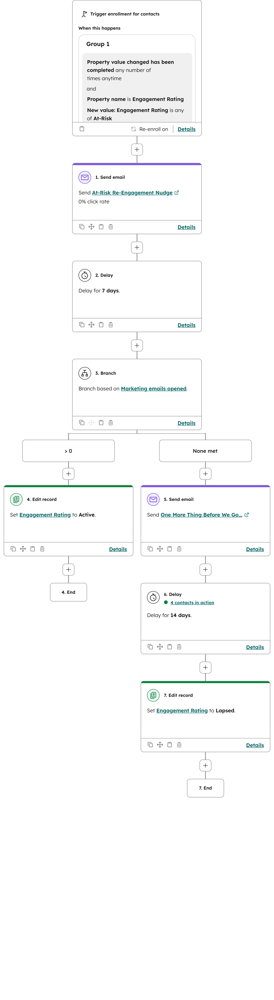

Project Overview
- 51 contacts imported and segmented by engagement level (Active, At-Risk, Lapsed)
- Smart segments that auto-update as contact properties change
- Three automated email templates tailored to each engagement segment
- Conditional workflow with branching logic based on email engagement
- Reporting dashboard with engagement breakdown and trend analysis

At-Risk Re-Engagement Workflow — built in HubSpot
Workflow Logic
1
Trigger: Contact's Engagement Rating changes to At-Risk
2
Send Email: At-Risk Re-Engagement Nudge
3
Delay: Wait 7 days for the contact to open the email
4
Branch: Check if the marketing email was opened
5
Opened (>0): Set Engagement Rating back to Active — contact is re-engaged
6
Not Opened: Send follow-up email “One More Thing Before We Go”
7
Delay: Wait 14 more days
8
Final Action: Set Engagement Rating to Lapsed